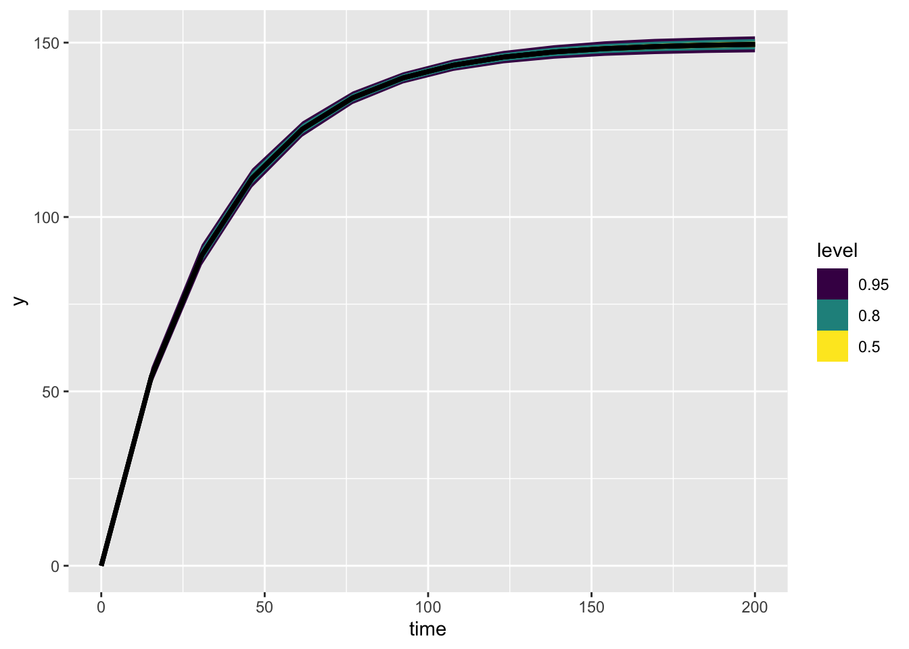

library(targets)
library(ggplot2)
library(tidyverse)
library(tidybayes)Many animals and plants grow quickly when small and more slowly as they mature. There are many popular ways of describing this relationship; one very common and convenient relationship is the Von-Bertanalaffy (VB) growth curve:
\[ L_t = L_0e^{-rt} + L_\infty(1 - e^{-rt}) \tag{1}\]
This can also be written as
\[ L_t = L_\infty - (L_\infty - L_0)e^{-rt} \]
This curve has a long tradition in ecology. It can be derived from simple assumptions about how different aspects of metabolism scale with the body size of an organism. I’m not going to derive it here because I don’t want this to be a huge post!
I like this second way of writing the equation because it highlights that the VB equation is a linear transformation of an exponential function. We start out at \(L_0\) and exponentially decay towards \(L_\infty\).
a single tree
I’m going to do a simple simulation of one tree growing. here is code that does that
tar_load(vb_one_tree)
vb_one_tree |>
ggplot(aes(x = time, y = Lt_obs)) +
geom_point() +
geom_line(aes(y = Lt)) +
theme_bw()
simulate this same data``` in targets
fit a stan model to it! here is the Stan model: formatted?
data{
int<lower=0> n;
vector[n] time;
vector[n] Lt;
}
parameters{
real<lower=0> r;
real<lower=0> Lmax;
real<lower=0> sigma_obs;
}
model{
Lt ~ normal(Lmax * (1 - exp(-r*time)), sigma_obs);
r ~ lognormal(-3, 1);
Lmax ~ normal(200, 20);
sigma_obs ~ exponential(1);
}vb_one_tree <- cmdstan_model(here::here("posts", "2022-10-14-growth_curve_measurement_error","vb_one_tree.stan"))
source(here::here("posts", "2022-10-14-growth_curve_measurement_error","vb-growth.R"))
one_tree_sim <- sim_vb_one_tree()
one_tree_list <- list(n = nrow(one_tree_sim),
time = one_tree_sim$time,
Lt = one_tree_sim$Lt_obs)
one_tree_post <- vb_one_tree$sample(data = one_tree_list,
refresh = 0L,
parallel_chains = 4)Running MCMC with 4 parallel chains...
Chain 1 finished in 0.1 seconds.
Chain 2 finished in 0.1 seconds.
Chain 3 finished in 0.1 seconds.
Chain 4 finished in 0.1 seconds.
All 4 chains finished successfully.
Mean chain execution time: 0.1 seconds.
Total execution time: 0.4 seconds.one_tree_post variable mean median sd mad q5 q95 rhat ess_bulk ess_tail
lp__ -81.50 -81.15 1.27 1.01 -83.92 -80.14 1.00 1797 2438
r 0.03 0.03 0.00 0.00 0.03 0.03 1.00 2423 2366
Lmax 150.70 150.69 1.14 1.13 148.88 152.63 1.00 2522 2453
sigma_obs 4.46 4.42 0.49 0.49 3.74 5.32 1.00 2545 2499plot it
library(tidybayes)
expected_df <- one_tree_post |>
spread_rvars(Lmax, r) |>
expand_grid(time = seq(0, 200, length.out = 14)) |>
mutate(Lt = Lmax * (1 - exp(-r * time)))
expected_plot <- expected_df |>
ggplot(aes(x = time, ydist = Lt)) +
stat_lineribbon()
expected_plotWarning: Using the `size` aesthietic with geom_ribbon was deprecated in ggplot2 3.4.0.
ℹ Please use the `linewidth` aesthetic instead.Warning: Unknown or uninitialised column: `linewidth`.Warning: Using the `size` aesthietic with geom_line was deprecated in ggplot2 3.4.0.
ℹ Please use the `linewidth` aesthetic instead.Warning: Unknown or uninitialised column: `linewidth`.
Unknown or uninitialised column: `linewidth`.
This relationship shows the average line, the expected size of the tree. We can add the original data like this:
one_tree_sim |>
ggplot(aes(x = time, y = Lt_obs)) +
geom_point() +
stat_dist_lineribbon(aes(x = time, dist = Lt),
data = expected_df, inherit.aes = FALSE)Warning: Unknown or uninitialised column: `linewidth`.
Unknown or uninitialised column: `linewidth`.
Unknown or uninitialised column: `linewidth`.
At the time of this writing the error messages here are particularly unhelpful. If you try to use stat_lineribbon rather than stat_dist_lineribbon you get the foloing misleading message:
one_tree_sim |>
ggplot(aes(x = time, y = Lt_obs)) +
geom_point() +
stat_lineribbon(aes(x = time, y = Lt),
data = expected_df, inherit.aes = FALSE)adding measurement error
Not all trees are the same age. there are two ways for a tree to be different in size to its neighbhours: it could be a different age, or it could grow at a different rate. when we fit a growth curve to many individuals, we usually need to shift the curve to the left or right. We do this by modelling the starting size as a parameter in the model
Here we kind of have two choices. We could subtract every trees first date of measurment from all measurements. This would start all trees off at 0. And then the likelihood for \(L_1\) would be:
\[ L_1 \sim \text{N}(L_0e^{-r0} + L_\infty(1 - e^{-r0}), \sigma_{obs}) \]
Or, we could split the likelihood into two parts: one for the first observations, and one for all subsequent ones:
\[ \begin{align} L_t &\sim \text{N}(L_oe^{-rt} + L_\infty(1 - e^{-rt}), \sigma_{obs}) \\ L_1 &\sim \text{N}(L_o, \sigma_{obs})\\ \end{align} \]
If we don’t know the size that the tree was at the beginning
create a new target to run tidybayes on both of these and extract them. look at the distributions of Lo.
think about how to work with differing growth rates across years – taylor approx?
make a multi-individual version where everyone has a different Lo parameter – just using indexing
make a multi-site version where everyone has a site offset too
can you do it like
vector_of_plot_id – as long as numbers of trees, having values up to the max plot id vector_of_plot_ids[tree_id] – get the plot that a specific tree is in
vector_of_plot_means[vector_of_plot_ids[tree_id]] vector_of_plot_sigmas[vector_of_plot_ids[tree_id]]
as the two parameters for the distribution of all tree IDs
then to calculate the Lo for a new tree you’d use these latter mean and sigma for that plot or whatever model you ahve
how to add yearly variation?
r is a year interval
would it be possible to find the expectation of a range of values from a gaussian process?
what would be the expectation of a t draws from a normal distribution? like every year, some are up and some are down – have any of those years been observed already.
tar_load(growth_curve_predict_mcmc_vb_one_tree_Lo_oneline_predictions)
tar_load(growth_curve_predict_data)
growth_curve_predict_mcmc_vb_one_tree_Lo_oneline_predictions |>
gather_rvars(Lnew[t_id]) |>
mutate(time = growth_curve_predict_data$timenew[t_id]) |>
ggplot(aes(x = time, dist = .value)) +
stat_dist_lineribbon()Warning: Unknown or uninitialised column: `linewidth`.
Unknown or uninitialised column: `linewidth`.
Unknown or uninitialised column: `linewidth`.
Is it as simple as: a generated quantites model which takes the new observations, models them as N(lo, sigma_obs), then computes the expectation as a generated quantity?